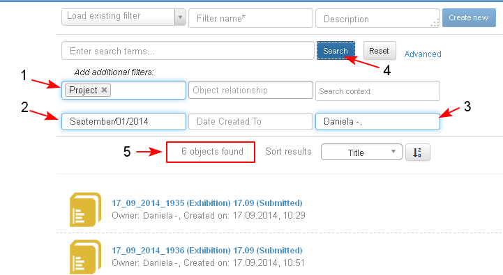
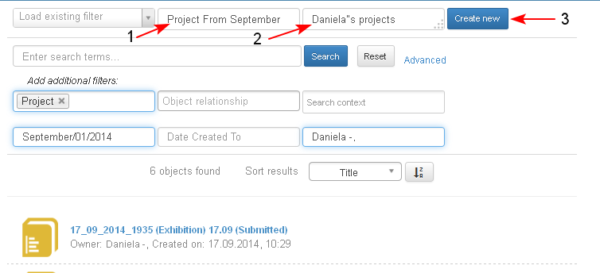
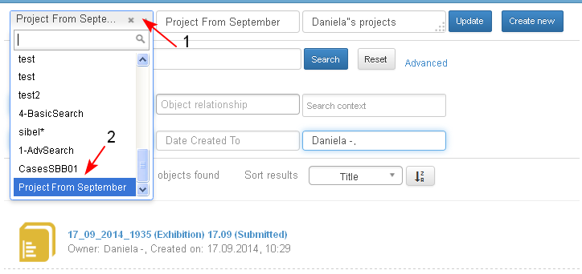
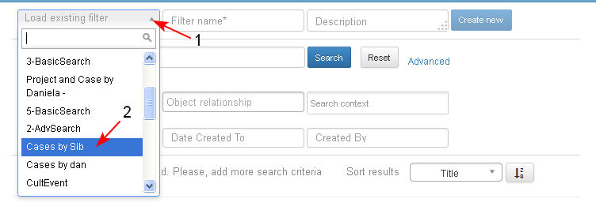
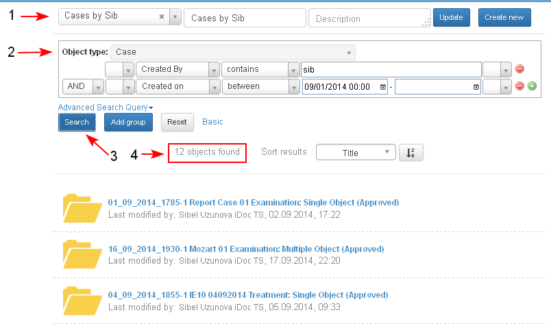
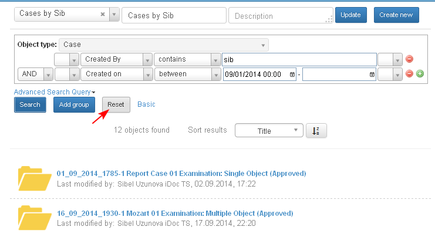
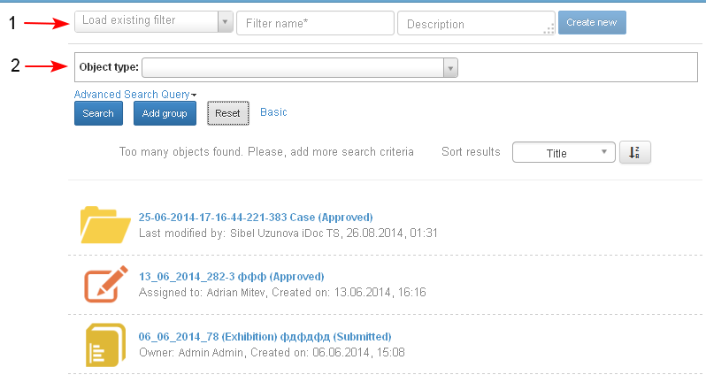
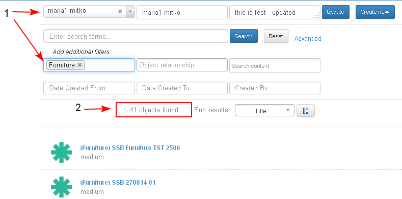
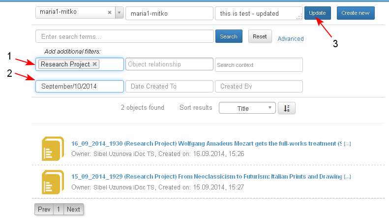
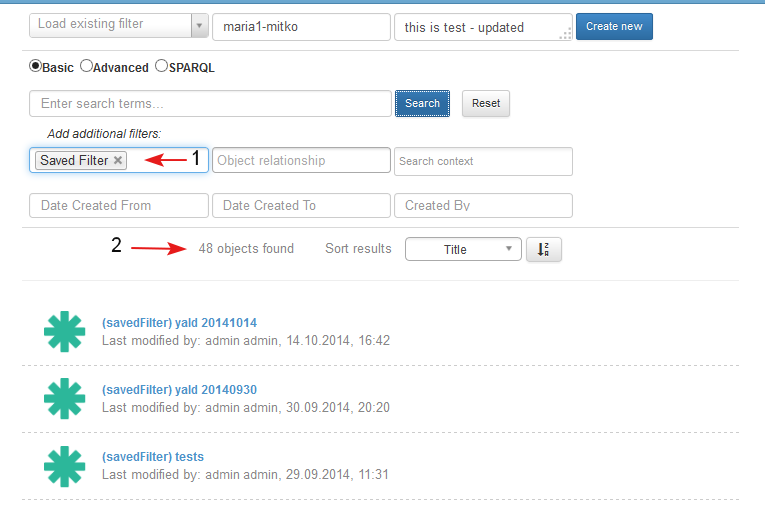

The user is able to save search configuration from Basic or Advanced search form (as a saved filter), specifying title for it and later load and use it at any time.
All new filters have unique names - two filters with same name cannot exist.
Filter without Name cannot be saved - options "Update" and "Create new" become disabled.
Save New Search
- The user opens the Basic (Advanced Search) page, selects search criteria (1-2-3) and clicks the button "Search" (4).
- The system displays the results in the list (5).

- The user enters the name (1) and description (2) of the filter and selects the option to save the filter clicking the button "Create new" (3).

- The entered new search name is loaded in the drop down menu(1-2) and the entered criteria are not changed.

Note: When the user tries to create a filter with already existing name and error indicating that filter with the same name already exist is shown.

Load Saved Search
The Basic (Advanced) search page is opened.
- The user loads a previously saved search by selecting it from the drop down menu of the field "Load existing filter" (1-2).

- The selected saved search (1), (basic or advanced) and its criteria (2) is loaded.
- The user clicks "Search" (3) and the system displays the results (4) in the table below.
- The user clicks "Search" (3) and the system displays the results (4) in the table below.

Reset
A saved search is loaded.
- The user clicks the "Reset" button.

- The system opens the empty search form of the previously loaded saved search (1-2). (in the example - the Advanced search page)

Update a Saved Filter
- The user loads a saved search (1). The system displays the results (2).

- The user edits the criteria (changing/ adding and/ or deleting them) (1-2) and selects to save the changes of the filter clicking "Update" (3).

- The saved filter is updated with the new criteria. The name of the saved search is not changed.
Note: If the user changes the name of the filter and then clicks "Update" - the filter will be saved with the new name.
Saved Searches are found after search
- The user is able to search for a saved filter as object of type "Saved Filter" in system (1).
- The saved searches is listed in the search results (2).
